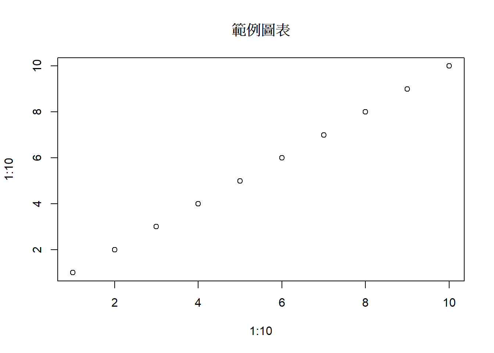

title: “讀書會筆記示範” author: “你的名字” date: “2025-02-07” output: bookdown::gitbook site: bookdown::bookdown_site —
歡迎來到我們的讀書會筆記！這裡記錄了我們的討論內容與學習心得。
這是第一章的示範內容。
這裡是主要的討論點：
bookdown
這是一個 R 語法範例：
plot(1:10, 1:10, main="範例圖表")

book_filename: “BookClubNotes” deletion: [“_book”, “docs”]
bookdown::gitbook: css: [style.css] split_by: chapter config: toc: collapse: section download: [pdf, epub]
這是 bookdown 建立的讀書會筆記範例。
bookdown::render_book("index.Rmd", "bookdown::gitbook")
請將 docs/ 設定為 GitHub Pages 部署目錄。
docs/